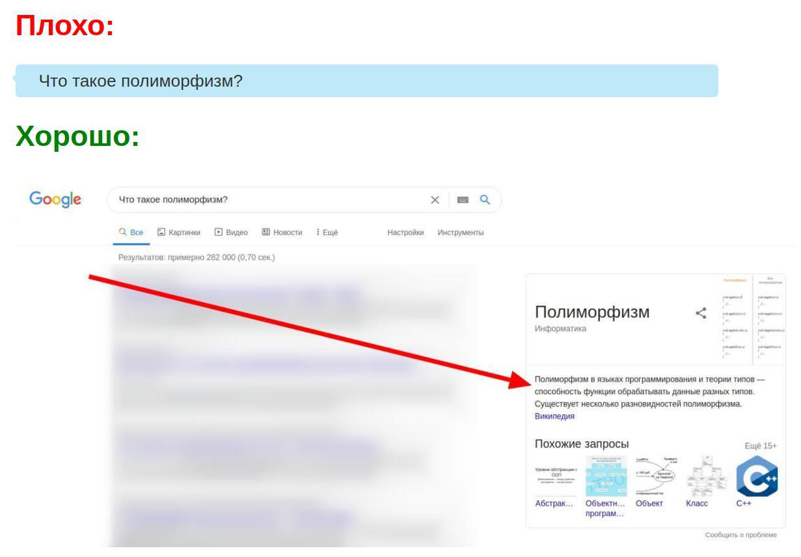

Iltimos Googleda qidirishni o'rganing!
Chat/forumlarda ushbu turdagi savvolarni bermang:
Bu turdagi savollarni avvalo googledan qidirishingiz (mumkin) kerak!
Qanday qidirish kerak:
- Google ni (yoki boshqa qidirish tizimini oching)
- Savolingizni yozing.
- Tushundim, lekin chat/forumlarda bunday savollarni berishning qanday yomon tomoni bor?
- Ishoning, 99% savollaringizni Internetda, forumlarda kimdir uzoq vaqtdan beri so'rab kelgan. Bu shuni anglatadiki, javob Internetda. Shuning uchun, savolingizni Google-ga (yoki boshqa qidiruv tizimiga) berib, siz nafaqat tezda javob olasiz, balki boshqa odamlarni yana bir bor bezovta qilmaysiz.
- Ya'ni chat/forumlarda savollar berish taqiqlangan/axloqsiz yoki yomonmi?
Unchalik emas. Agar sizda savol bo'lsa, avval google-da, keyin javob topa olmasangiz, chat / forumlarda savolingizni berish uchun Yandex dan qidirishingiz mumkin.
Ushbu rasmdagi misol:
